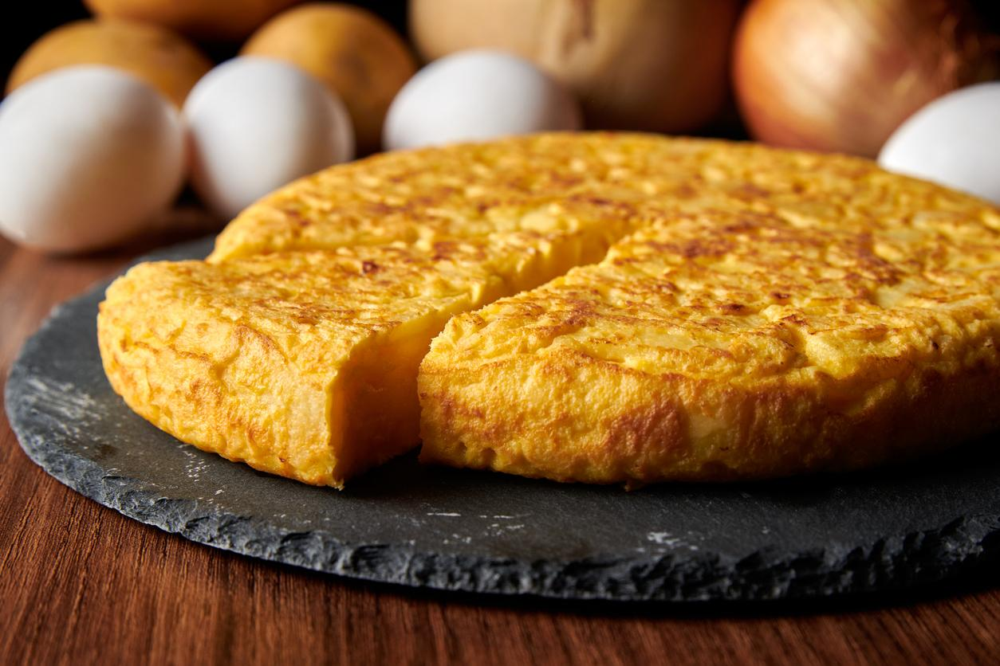

Tortilla

The delicious typical tortilla from Spain
This dish is made with potatoes, eggs and onions. You basically chop the potatoes and onions, stir the eggs and cook
everything in a pan. This is a typical dish from spain but loved all around the world. The best tortilla is the one
that my grandmother cooks.
Ingredients
- 2 potatoes
- 3 eggs
- 1 onion
- Oil
- Salt
Steps
- Cut the potatoes and the onions
- Stir the eggs in a bowl
- Set the pan in low fire
- Put the onion in the pan
- Once the onion is half-way cooked, put the potatoe in the pan
- Wait untill everything is almost cooked (about 15 minutes)
- Pour the stirred eggs in the pan covering everything and wait for about 5 minutes
- Take a plate, put it over the pan and quickly flip so the tortilla falls in it, then put back the other way round
- Wait for about 5 minutes untill that side is cooked
- Take the plate again and repeat but this time don't put it back and voila!